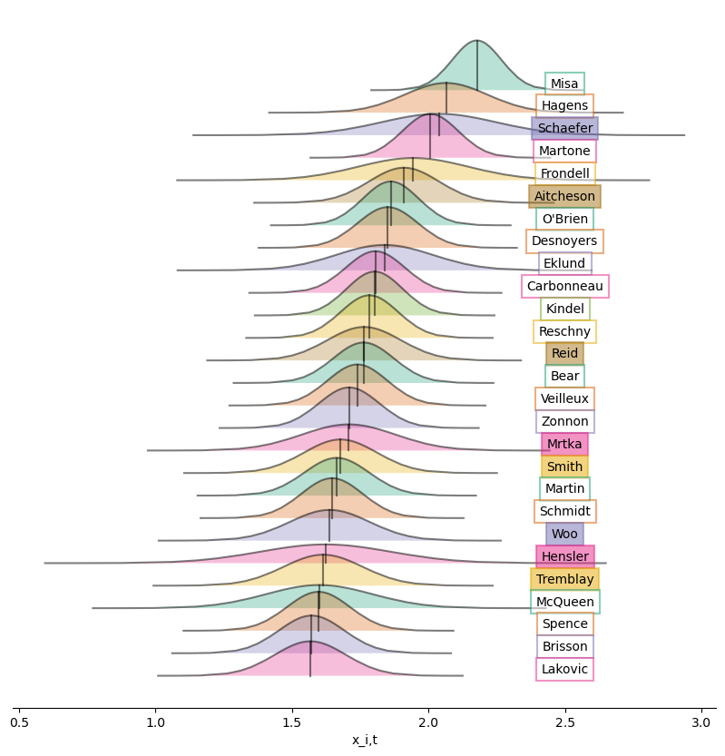

Part 1
Bookmarking the current version of my prospect model by arriving at a trivial lesson. Assuming familiarity with the problem let’s jump right to my initial approach, a state space model.
We model player \(i\)’s point production for \(GP\) games played at position \(k\) in league \(j\) during season \(t\) at \(u\) years relative to draft eligibility as:
\[ Pts_{ijkt} \sim \mathbf{Poisson}(GP_{i,j,t} * \lambda_{i,j,t}) \]
\(\log{\lambda_{i,j,t}} = x_{i,t} + League_{j,t} + Age_{k,u}\)
\(x_{i,t} = \phi x_{i,t-1} + \epsilon_{i,t}\)
\(League_{j,t} = League_{j,t-1} + \omega_{j,t}\)
\(Age_{k,u} = Age_{k,u-1} + \psi_{k,u}\)
\(\epsilon_{i,t} \sim \mathbf{Normal}(0, \sigma^2)\)
\(\omega_{j,t} \sim \mathbf{Normal}(0, \delta^2)\)
\(\psi_{k,u} \sim \mathbf{Normal}(0, \gamma^2)\)
\(\phi \in [0,1]\)
where a player’s ability \(x_{i,t}\) is modelled as a autoregressive process of order 1 across seasons.
As \(\phi\) nears zero we do not expect ability to correlate between seasons (\(x_t \approx \epsilon_t\)). Player transfers become uninformative and the league coefficients collapse in order of their point rates.
If you constrain \(\sigma\) to be small and \(\phi = 1\) then a player’s ability remains static year to year (\(x_t \approx x_{t-1}\)). This persistence gives the model footing for comparison and the league coefficients shift in accordance to what we see from historic drafting.
The issue I’ve come across is fitting a process flexible enough across an individual’s career while sufficiently rigid for evaluating leagues. It’s fairly relevant for this years NHL draft. Shaefer would jump to first in my rankings should we only consider this year’s 22 points in 17 games. But ignoring the 17 in 56 2023 campaign seems inconsistent when that is the kind of thing we rely on for calculating league equivalency!
Seperating these goals into a two step model might be the obvious / correct / foolproof solution… but without deviating from my mess a quick possible fix is to fit
\[x_{i,t} = \begin{cases} \phi_1 x_{i,t} + \epsilon_{1,i,t} & u\le0 \\ \phi_2 x_{i,t} + \epsilon_{2,i,t} & u\gt0 \\ \end{cases}\]
where \(u=0\) is a player’s draft year and \(\epsilon_{1}\) and \(\epsilon_{2}\) correspond with two different \(\sigma\)’s. That way I can let ability evolve as squiggly as necessary up until the day we submit picks and then stiffen up which could be more useful for comparing leagues.
Good grief. Here’s how my current top 32 looks so far. Still loves the Q a little too much.
 Ridge plot ordering the top 27 eligible players for the 2025 NHL Draft based on the posteriors for player ability \(x_{i,t}\). In list form below.
| Rank. | LastName | x | NHL Scouting Rank |
|---|---|---|---|
| 1. | Misa | 2.18 | 2 |
| 2. | Hagens | 2.06 | 3 |
| 3. | Schaefer | 2.04 | 1 |
| 4. | Martone | 2.01 | 6 |
| 5. | Frondell | 1.94 | 1 Int. |
| 6. | Aitcheson | 1.91 | 9 |
| 7. | O’Brien | 1.86 | 4 |
| 8. | Desnoyers | 1.85 | 7 |
| 9. | Eklund | 1.84 | 2 Int. |
| 10. | Carbonneau | 1.81 | 16 |
| 11. | Kindel | 1.8 | 21 |
| 12. | Reschny | 1.78 | 25 |
| 13. | Reid | 1.76 | 23 |
| 14. | Bear | 1.76 | 10 |
| 15. | Veilleux | 1.74 | 91 |
| 16. | Zonnon | 1.71 | 31 |
| 17. | Mrtka | 1.71 | 5 |
| 18. | Smith | 1.68 | 13 |
| 19. | Martin | 1.66 | 11 |
| 20. | Schmidt | 1.65 | 43 |
| 21. | Woo | 1.64 | 156 |
| 22. | Hensler | 1.62 | 12 |
| 23. | Tremblay | 1.61 | |
| 24. | McQueen | 1.6 | 8 |
| 25. | Spence | 1.6 | 17 |
| 26. | Brisson | 1.57 | |
| 27. | Lakovic | 1.57 | 14 |